คู่มือจังหวัด (ส่วนกลาง)
เว็บไซต์ https://schoolbuslampang.com · ปรับปรุง 24 ต.ค. 2569 · ภาพในคู่มือเป็นข้อมูลตัวอย่าง ชื่อและเบอร์ในภาพถูกเบลอไว้
คู่มือนี้สำหรับใคร และทำอะไรได้บ้าง
คู่มือนี้สำหรับเจ้าหน้าที่และผู้บริหารที่ใช้บัญชีระดับจังหวัด เช่น สภาองค์กรของผู้บริโภคจังหวัดลำปาง หรือ อบจ. บัญชีนี้เห็นข้อมูลทั้งจังหวัด และส่วนใหญ่เป็นการดูอย่างเดียว
- ดูภาพรวมการรับส่งนักเรียนทั้งจังหวัดในหน้าเดียว
- ดูข้อมูลสังกัด โรงเรียน นักเรียน และรถรับส่ง
- ดูตำแหน่งรถ แผนที่จุดรับส่ง และเหตุฉุกเฉิน
- เปิดดูและดาวน์โหลดรายงาน (CSV / Excel / PDF)
- รับและติดตามเรื่องที่ต้องมีส่วนร่วม (ข้อเสนอ ข้อร้องเรียน ข้อกังวล)
- รีเซ็ตรหัสผ่านให้บัญชีสังกัดและบัญชีขนส่ง
💡 ใช้คอมพิวเตอร์จะดูตาราง แผนที่ และรายงานได้สะดวกกว่า บนมือถือจะมีแถบด้านล่าง 4 ปุ่ม: หน้าแรก · โรงเรียน · ตำแหน่ง · รายงาน ถ้าต้องการเมนูอื่น ให้กดปุ่ม ☰ มุมซ้ายบน
เมนูด้านซ้าย
เมนูที่ใช้บ่อยอยู่ด้านบน เมนูที่ใช้นาน ๆ ครั้งพับไว้ใต้คำว่า เพิ่มเติม กดที่คำนี้เพื่อเปิดหรือปิด
| กลุ่ม | เมนู |
|---|---|
| ด้านบน | ภาพรวมจังหวัด · สังกัด · โรงเรียน · ข้อมูลนักเรียน · รถรับส่ง · ตำแหน่งปัจจุบัน · แผนที่จุดรับส่ง · เหตุฉุกเฉิน · รายงาน |
| เพิ่มเติม | ความพร้อมเปิดใช้งาน · บัญชีสังกัดและขนส่ง · ประวัติการแก้ไข · นโยบายและสิทธิของฉัน · เรื่องที่ต้องมีส่วนร่วม · สรุปการมีส่วนร่วม |

ภาพ: ตัวอย่างเมนูเมื่อกดเปิด "เพิ่มเติม" (ภาพจากบัญชีโรงเรียน บัญชีจังหวัดมีรายการตามตารางด้านบน)
เริ่มต้นใช้งาน
เข้าสู่ระบบ
- เปิด https://schoolbuslampang.com
- พิมพ์ชื่อผู้ใช้ในช่อง ชื่อผู้ใช้หรือทะเบียนรถ
- พิมพ์รหัสผ่าน
- กด เข้าสู่ระบบ

ภาพ: หน้าเข้าสู่ระบบ
ทำเสร็จแล้วจะเห็นหน้า ภาพรวมจังหวัด
- ชื่อผู้ใช้ คือชื่อที่ผู้ดูแลระบบตั้งให้หน่วยงานของคุณ (ไม่ใช่ทะเบียนรถ ทะเบียนรถใช้สำหรับคนขับเท่านั้น)
- ถ้ารหัสผ่านของคุณสั้นกว่า 8 ตัวอักษร ให้เปลี่ยนใหม่ (ดูหัวข้อ "เปลี่ยนรหัสผ่าน" ด้านล่าง)
- ถ้าระบบพาไปหน้าเปลี่ยนรหัสผ่านทันที ต้องตั้งรหัสใหม่ก่อน จึงจะใช้เมนูอื่นได้

ภาพ: หน้าเปลี่ยนรหัสผ่าน
ลืมรหัสผ่าน
- ที่หน้าเข้าสู่ระบบ กด ลืมรหัสผ่านหรือเข้าใช้งานไม่ได้ จะเห็นข้อความว่า "ต้นสังกัด ขนส่ง และจังหวัด: ติดต่อผู้ดูแลระบบระดับจังหวัด"
- บัญชีจังหวัดตั้งรหัสใหม่เองไม่ได้ ให้ติดต่อผู้ดูแลระบบให้รีเซ็ตให้
- หลังรีเซ็ต ระบบจะให้คุณตั้งรหัสผ่านใหม่ก่อนใช้งาน
ℹ️ ในเมนูบัญชี (มุมขวาบน) มีเมนู ความปลอดภัยบัญชี แต่การกู้รหัสผ่านผ่าน LINE ยังไม่เปิดให้บัญชีจังหวัด หน้าจอจะขึ้นว่า ยังไม่เปิดใช้การกู้คืนรหัสผ่าน ซึ่งเป็นเรื่องที่ยังรอตัดสินใจ ไม่ใช่ระบบเสีย
งานประจำวัน (ทำตามลำดับ)
- เปิด ภาพรวมจังหวัด ดูว่าวันนี้ปกติหรือไม่
- ถ้ามีการ์ด "ต้องทำวันนี้" กดปุ่มในการ์ดเพื่อไปดูรายละเอียด
- ถ้ามีเหตุฉุกเฉิน เปิด เหตุฉุกเฉิน
- เปิด เรื่องที่ต้องมีส่วนร่วม ดูว่ามีเรื่องใหม่หรือไม่
- ถ้าต้องการติดตามรถที่กำลังวิ่ง เปิด ตำแหน่งปัจจุบัน
1. ดูภาพรวมจังหวัด
- กดเมนู ภาพรวมจังหวัด (หรือปุ่ม หน้าแรก บนมือถือ)
- อ่านแถบสีใหญ่ด้านบน ซึ่งสรุปวันนี้ในประโยคเดียว
- ดูการ์ด ต้องทำวันนี้ แล้วกดปุ่มในการ์ดถ้าต้องการดูต่อ
- ดูตัวเลข ส่งเช้า · รับเย็น · โรงเรียนที่ใช้งาน · เหตุฉุกเฉิน 7 วัน
- ถ้าต้องการรายละเอียด กด ดูรายละเอียด ที่หัวข้อด้านล่าง
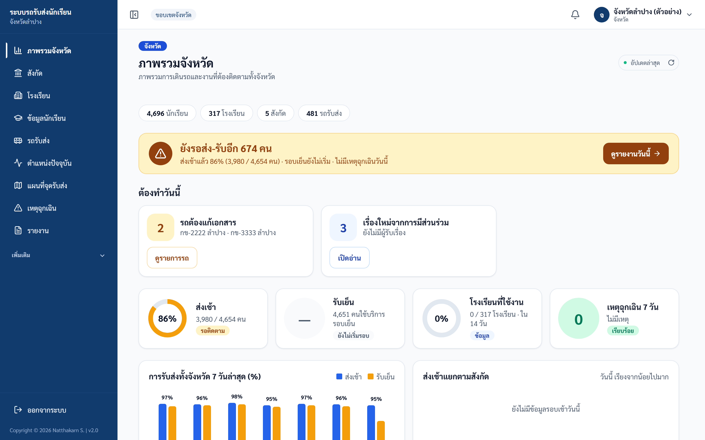
ภาพ: หน้าภาพรวมจังหวัด (ข้อมูลตัวอย่าง)
| แถบสีด้านบน | หมายความว่า |
|---|---|
| เทา ยังไม่เริ่มรับส่งวันนี้ | คนขับยังไม่เริ่มรอบเช้า |
| แดง มีเหตุฉุกเฉินวันนี้ | กด ดูเหตุฉุกเฉิน ทันที |
| เหลืองหรือแดง ยังมีนักเรียนรอรับส่ง | กด ดูรายงานวันนี้ เพื่อดูว่าโรงเรียนไหนยังค้าง |
| เขียว ภาพรวมวันนี้ปกติ | ไม่ต้องทำอะไรเพิ่ม |
การ์ด ต้องทำวันนี้ มีได้ 3 แบบ:
- รถต้องแก้เอกสาร คือรถที่ยังไม่ตรวจ ตรวจไม่ผ่าน หรือประกันมีปัญหา กด ดูรายการรถ
- เรื่องใหม่จากการมีส่วนร่วม คือเรื่องที่ยังไม่มีใครรับ กด เปิดอ่าน
- โรงเรียนยังไม่ใช้ระบบ คือโรงเรียนที่ไม่มีการบันทึกเลยใน 14 วัน กด ดูรายชื่อ
สีบนหน้าจอ: เขียว = เรียบร้อย · เหลือง = รอติดตาม · แดง = ต้องรีบดู · เทา = ยังไม่เริ่ม
ทำเสร็จแล้วจะเห็น: สถานการณ์ทั้งจังหวัดของวันนี้ หน้านี้อัปเดตเองทุก 30 วินาที หรือกดปุ่มรีเฟรชมุมขวาบน
ℹ️ ตัวเลขส่งเช้าและรับเย็นรวมทั้งที่คนขับบันทึก และที่ครูประจำสายชั้นเช็กชื่อที่โรงเรียน (ไม่นับซ้ำ)
2. ดูเหตุฉุกเฉิน
- กดเมนู เหตุฉุกเฉิน
- อ่านรายการ เรื่องใหม่อยู่บนสุด
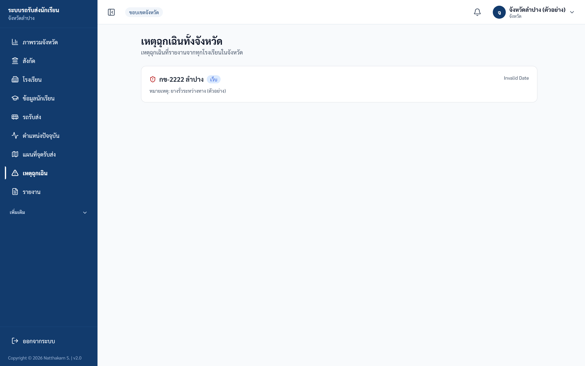
ภาพ: หน้าเหตุฉุกเฉินทั้งจังหวัด (ในภาพวันที่ขึ้นผิดเพราะเป็นข้อมูลจำลอง ระบบจริงแสดงวันเวลาที่แจ้ง)
ทำเสร็จแล้วจะเห็น: ทะเบียนรถ ช่องทางที่แจ้ง เวลา รายละเอียด และผลลัพธ์ของแต่ละเหตุ
⚠️ บัญชีจังหวัดดูได้อย่างเดียว แก้ไขหรือปิดเรื่องเหตุฉุกเฉินไม่ได้ ถ้าต้องติดตาม ให้ประสานโรงเรียนหรือสังกัดของรถคันนั้น
3. ดูเรื่องที่ต้องมีส่วนร่วม
ระบบไม่แจ้งเตือนเมื่อมีเรื่องใหม่ (ไม่มีอีเมล ไม่มี LINE) จึงต้องเข้ามาเปิดดูเอง ควรตกลงในหน่วยงานว่าใครเปิดดู และดูบ่อยแค่ไหน
- กด เพิ่มเติม ในเมนูด้านซ้าย
- กด เรื่องที่ต้องมีส่วนร่วม ระบบจะแสดงเรื่อง ที่ยังไม่จบ ให้ก่อน
- ดูเรื่องที่มีสถานะ ยื่นเรื่องแล้ว ก่อน เพราะยังไม่มีใครรับ
- กดที่แถวเพื่อเปิดเรื่องนั้น
- ในช่อง เหตุการณ์ เลือกสิ่งที่ทำ เช่น รับเรื่อง
- พิมพ์ข้อความ แล้วกด บันทึกเหตุการณ์
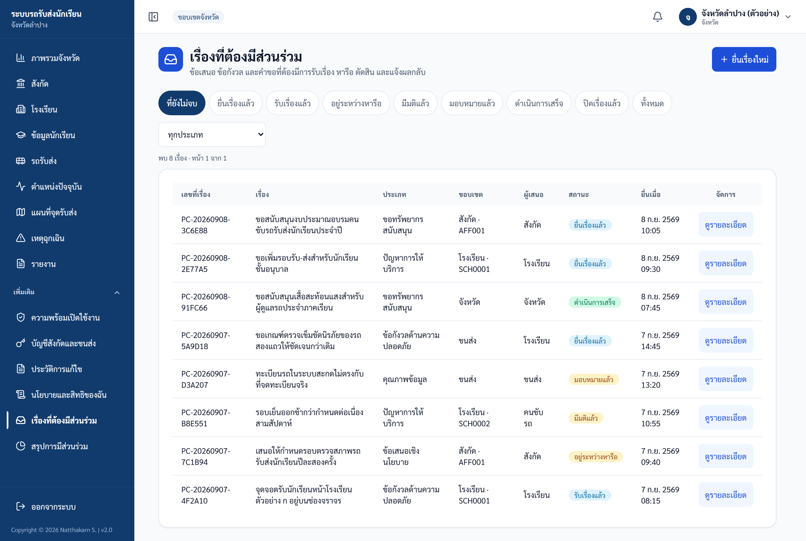
ภาพ: รายการเรื่องที่ต้องมีส่วนร่วม บัญชีจังหวัดเห็นทุกเรื่องทั้งจังหวัด
ทำเสร็จแล้วจะเห็น: ข้อความ บันทึกเหตุการณ์สำเร็จ และเหตุการณ์ใหม่ในประวัติของเรื่อง
ลำดับที่ควรทำ: รับเรื่อง → (ให้ความเห็น หรือ เปิดหารือ) → บันทึกมติ → มอบหมายผู้รับผิดชอบ → ดำเนินการเสร็จ → แจ้งผลกลับผู้เสนอ
| สถานะ | หมายความว่า |
|---|---|
| ยื่นเรื่องแล้ว | ยังไม่มีใครรับ ต้องรีบดู |
| รับเรื่องแล้ว | มีผู้รับแล้ว |
| อยู่ระหว่างหารือ | เปิดหารือแล้ว |
| มีมติแล้ว | ตัดสินแล้ว |
| มอบหมายแล้ว | มีผู้รับผิดชอบแล้ว |
| ดำเนินการเสร็จ | ทำเสร็จ แต่ยังไม่ได้แจ้งผู้เสนอ |
| ปิดเรื่องแล้ว | แจ้งผลกลับผู้เสนอแล้ว จบเรื่อง |
| ถอนเรื่อง | ยุติเรื่อง ย้อนกลับไม่ได้ (ดูได้ที่ตัวกรอง ทั้งหมด) |
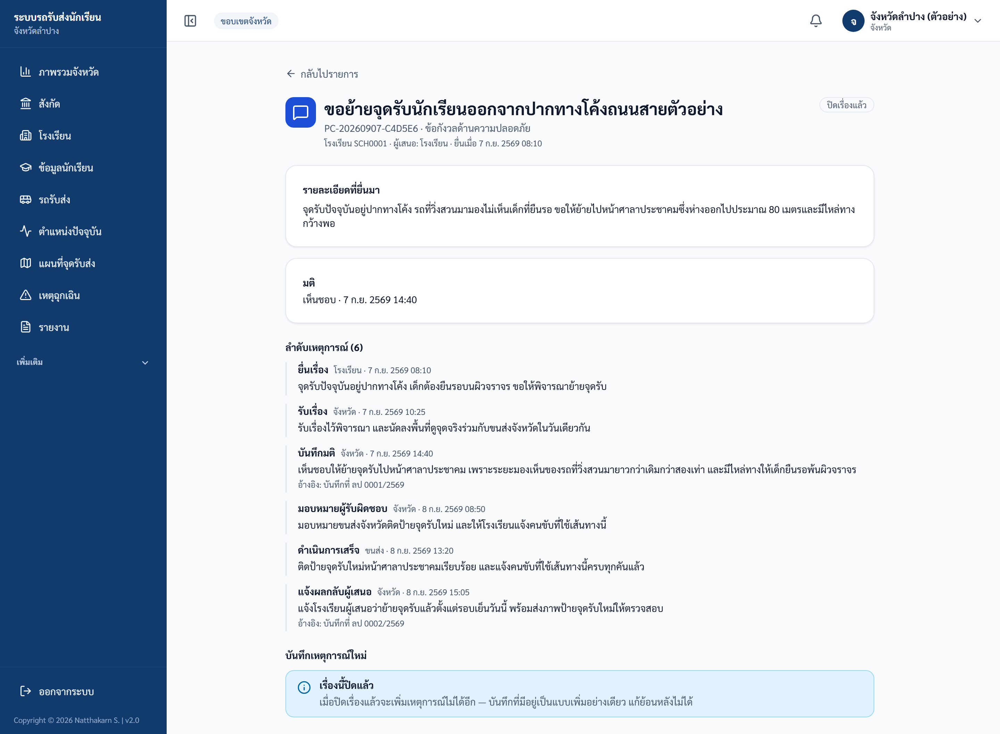
ภาพ: เรื่องที่ทำครบทุกขั้นแล้ว สถานะเป็น "ปิดเรื่องแล้ว"
- บันทึกมติ: ต้องเลือกมติ (เห็นชอบ / ไม่เห็นชอบ / ชะลอไว้ก่อน / ไม่ต้องดำเนินการ) และต้องพิมพ์เหตุผลทุกครั้ง
- ให้ความเห็น ไม่เปลี่ยนสถานะ ถ้าสถานะไม่ขยับ แปลว่าถูกต้องแล้ว
- แจ้งผลกลับผู้เสนอ กดได้เมื่อสถานะเป็น ดำเนินการเสร็จ แล้วเท่านั้น และต้องพิมพ์ว่าแจ้งอะไรไป
- ขั้นอื่นข้ามได้ ระบบไม่บังคับ แต่ควรทำให้ครบทุกขั้น
⚠️ สิ่งที่บันทึกแล้วลบหรือแก้ไม่ได้ ถ้าพิมพ์ผิด ให้เพิ่มความเห็นใหม่ · มอบหมายแล้วเปลี่ยนผู้รับผิดชอบไม่ได้ · ห้ามพิมพ์ชื่อนักเรียน เลขบัตรประชาชน หรือเบอร์โทร เพราะหลายหน่วยงานเห็นข้อความนี้
4. ดูตำแหน่งรถ
- กดเมนู ตำแหน่งปัจจุบัน (หรือปุ่ม ตำแหน่ง บนมือถือ)
- กดเลือกรถในรายการ เพื่อดูรถคันนั้นบนแผนที่
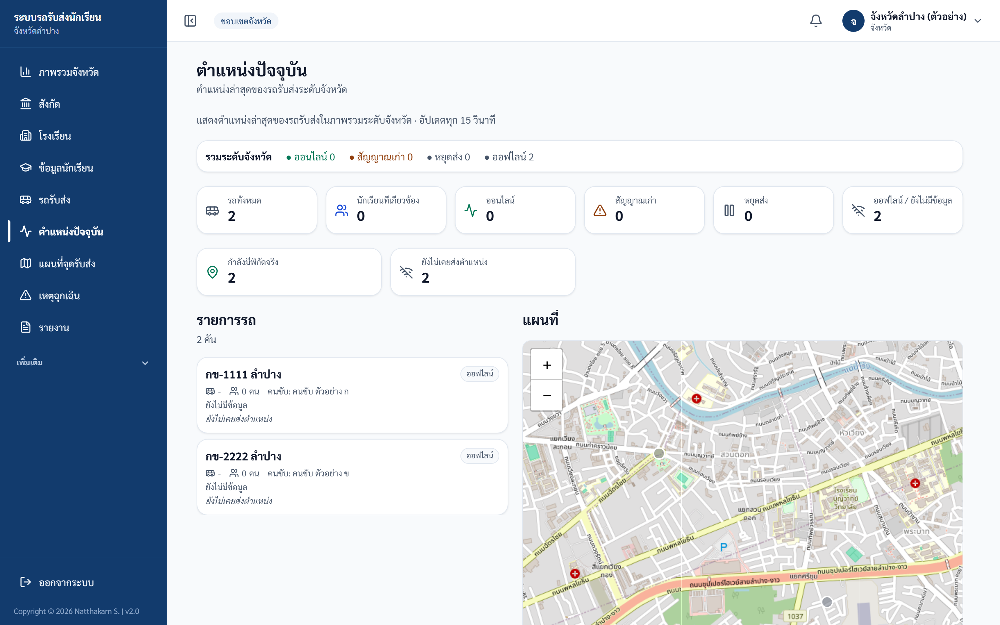
ภาพ: หน้าตำแหน่งปัจจุบัน
ทำเสร็จแล้วจะเห็น: แผนที่และสถานะของรถแต่ละคัน: ออนไลน์ · สัญญาณเก่า · หยุดส่ง · ออฟไลน์
- รถจะขึ้นบนแผนที่ก็ต่อเมื่อคนขับกด เริ่มส่งตำแหน่ง ในโทรศัพท์ของคนขับ
- รถที่ไม่เคยส่งตำแหน่งจะอยู่ในกลุ่ม ยังไม่เคยส่งตำแหน่ง
- ระบบบันทึกไว้ว่าใครเปิดดูหน้านี้
งานอื่น ๆ (ทำเมื่อจำเป็น)
ดูและดาวน์โหลดรายงาน
- กดเมนู รายงาน
- เลือกแท็บ รายวัน · รายเดือน · สรุปภาพรวม หรือ เชิงนโยบาย
- แท็บรายวัน: เลือกวันในช่อง วันที่ของรายงาน · แท็บรายเดือน: เลือกเดือนในช่อง เดือนของรายงาน
- กดปุ่ม CSV · Excel หรือ PDF เพื่อดาวน์โหลด

ภาพ: หน้ารายงาน (ภาพจากบัญชีผู้ดูแลระบบ เมนูด้านซ้ายจึงต่างจากบัญชีจังหวัด)
ทำเสร็จแล้วจะเห็น: ไฟล์รายงานทั้งจังหวัดในเครื่องของคุณ
- กด PDF ในแท็บรายวัน จะมีหน้าต่าง บันทึกการตัดสินใจ ขึ้นมา จะกรอกหรือไม่ก็ได้ กด บันทึก + ดาวน์โหลด หรือ ข้าม
- แท็บ เชิงนโยบาย เป็นสรุปสำหรับผู้บริหาร ไม่มีปุ่มดาวน์โหลด ถ้าต้องการเอกสาร ให้กดพิมพ์จากเบราว์เซอร์
- แท็บ สรุปภาพรวม และ เชิงนโยบาย ไม่ต้องเลือกวันที่ กด รีเฟรชข้อมูล เพื่อดูตัวเลขล่าสุด
- ปุ่ม PDF ของแท็บสรุปภาพรวมจะเปิดหน้าต่างพิมพ์ ให้เลือก "บันทึกเป็น PDF"
ℹ️ ถ้าหน้ารายงานขึ้นว่า "ไม่มีข้อมูล" แปลว่าวันหรือเดือนที่เลือกยังไม่มีการบันทึกรับส่งพอจะสรุปได้ เช่น วันหยุด หรือคนขับยังไม่เริ่มรอบ ไม่ใช่ระบบเสีย ให้ลองเลือกวันอื่น หรือรอให้มีการบันทึกก่อน
ดูข้อมูลสังกัด โรงเรียน นักเรียน และรถ
| ต้องการดู | กดเมนู | วิธีใช้ |
|---|---|---|
| เปรียบเทียบผลรายสังกัด | สังกัด | อ่านตาราง สรุป KPI รายสังกัด |
| รายชื่อโรงเรียน | โรงเรียน | เลือกสังกัดเพื่อกรอง หน้าละ 50 โรงเรียน กด ถัดไป เพื่อดูหน้าต่อไป |
| หานักเรียนรายคน | ข้อมูลนักเรียน | พิมพ์ชื่อ นามสกุล หรือรหัสนักเรียน เลือกชั้น สังกัด หรือโรงเรียนเพื่อกรอง กด ล้างตัวกรอง เพื่อเริ่มใหม่ |
| ข้อมูลรถและผลตรวจ | รถรับส่ง | ค้นด้วยทะเบียนรถ กด แสดงรายชื่อนักเรียน ในการ์ดรถเพื่อดูเด็กในรถ |
| จุดรับส่งบนแผนที่ | แผนที่จุดรับส่ง | เลือกตัวกรอง แล้วกด ใช้ตัวกรอง |
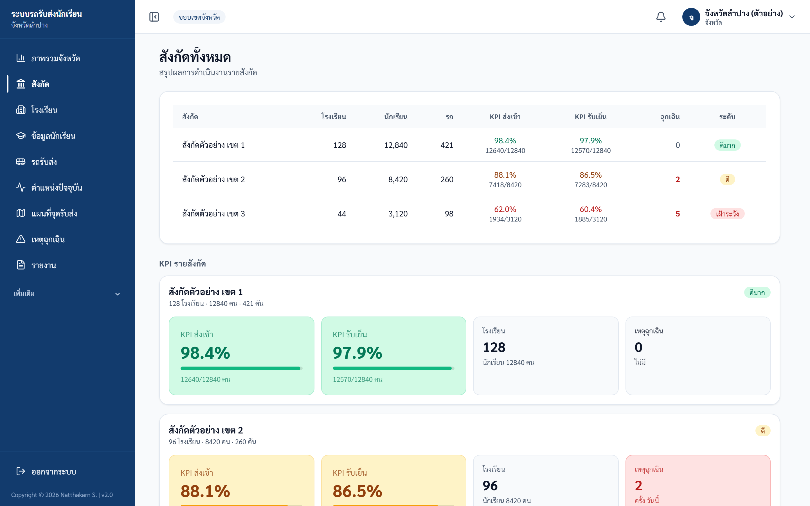
ภาพ: หน้าสังกัด
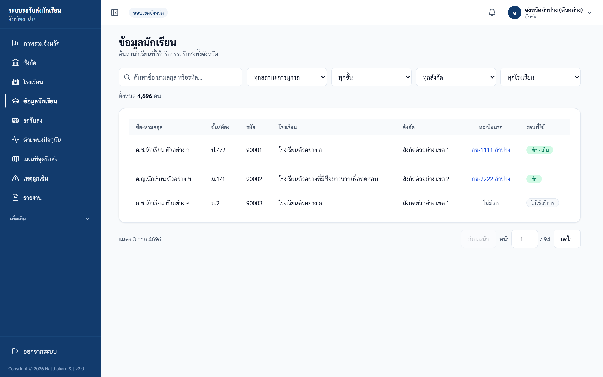
ภาพ: หน้าข้อมูลนักเรียน
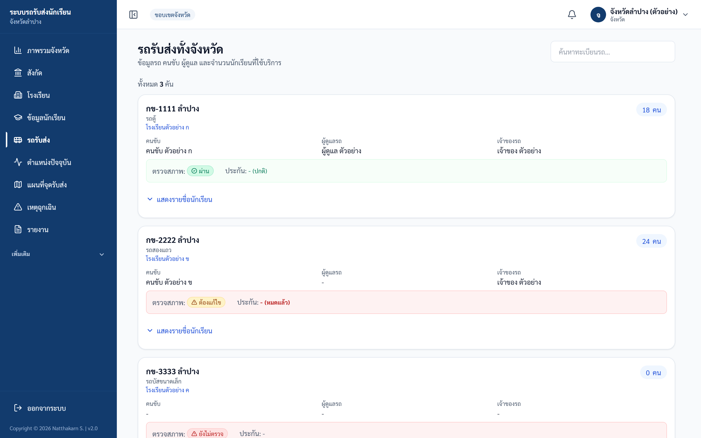
ภาพ: หน้ารถรับส่ง
- หน้าเหล่านี้ไม่แสดงเบอร์โทรและข้อมูลผู้ปกครอง โดยตั้งใจ ถ้าต้องการ ให้ติดต่อโรงเรียน
- หน้า รถรับส่ง แสดงเฉพาะรถที่มีนักเรียนอย่างน้อย 1 คน ตัวเลขจึงอาจน้อยกว่า "รถทั้งหมด" ในหน้าภาพรวม
- แผนที่จุดรับส่งแสดงเป็นตัวเลขรวม ไม่มีชื่อหรือที่อยู่นักเรียน
ดูสถานะรับส่งวันนี้รายคน
หน้านี้ไม่มีในเมนู ให้พิมพ์ที่อยู่ schoolbuslampang.com/province/status ในช่องที่อยู่ของเบราว์เซอร์
- กดที่ชื่อสังกัดเพื่อเปิดดูโรงเรียน
- กดที่ชื่อโรงเรียนเพื่อเปิดดูรถ
- กดที่รถเพื่อดูรายชื่อนักเรียน
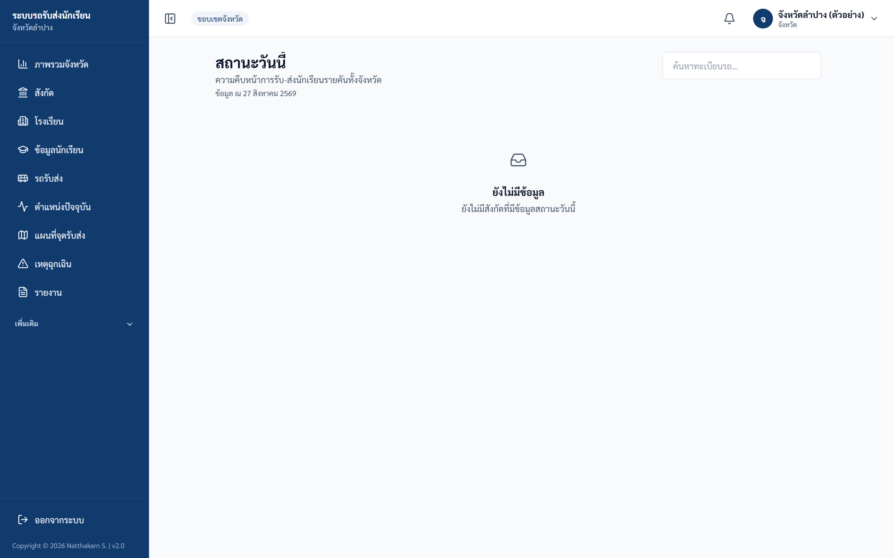
ภาพ: หน้าสถานะวันนี้ (ภาพนี้ถ่ายวันที่ยังไม่มีข้อมูล จึงขึ้นว่า "ยังไม่มีข้อมูล")
ทำเสร็จแล้วจะเห็น: นักเรียนแต่ละคนว่า เรียบร้อย · รอดำเนินการ หรือ ไม่ใช้บริการ
รีเซ็ตรหัสผ่านให้บัญชีสังกัดหรือขนส่ง
ใช้เมื่อเจ้าหน้าที่สังกัดหรือขนส่งลืมรหัสผ่าน
- กด เพิ่มเติม ในเมนูด้านซ้าย
- กด บัญชีสังกัดและขนส่ง
- หาบัญชีที่ต้องการ แล้วกด รีเซ็ตรหัส
- พิมพ์รหัสผ่านใหม่ อย่างน้อย 8 ตัวอักษร
- พิมพ์ซ้ำในช่อง ยืนยันรหัสผ่านใหม่
- กด รีเซ็ตรหัสผ่าน
ทำเสร็จแล้วจะเห็น: รีเซ็ตรหัสผ่านสำเร็จ — ผู้ใช้ต้องตั้งรหัสใหม่เมื่อเข้าสู่ระบบครั้งถัดไป
- ถ้าเจ้าของบัญชีกำลังใช้งานอยู่ จะหลุดออกจากระบบทันที
- บอกรหัสใหม่กับเจ้าตัวโดยตรง ห้ามส่งในกลุ่มแชต
- บัญชีโรงเรียน จังหวัดรีเซ็ตให้ไม่ได้ ให้สังกัดของโรงเรียนนั้นเป็นผู้รีเซ็ต
ดูสรุปการมีส่วนร่วม
- กด เพิ่มเติม แล้วกด สรุปการมีส่วนร่วม
- อ่านจำนวนเรื่องแยกตามสถานะ ประเภท และผู้เสนอ
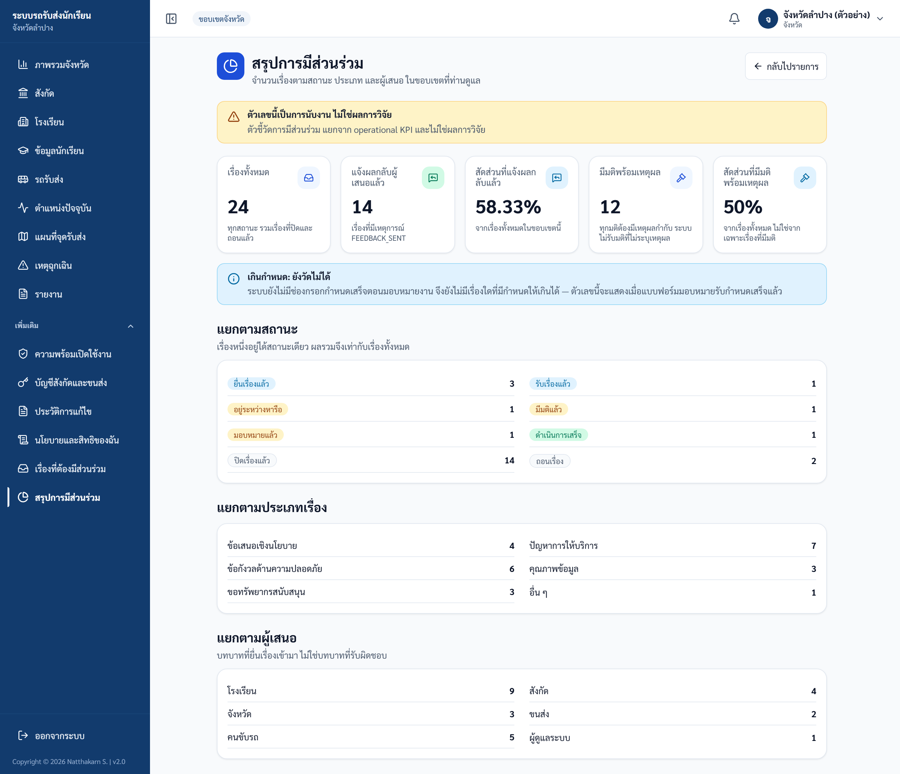
ภาพ: หน้าสรุปการมีส่วนร่วม
ตัวเลขในหน้านี้เป็นการนับจำนวนเรื่อง ไม่ใช่ผลการวิจัย ช่อง เกินกำหนด: ยังวัดไม่ได้ หมายความว่าระบบยังไม่มีข้อมูลพอจะนับเรื่องนี้
ดูความพร้อมเปิดใช้งาน
- กด เพิ่มเติม แล้วกด ความพร้อมเปิดใช้งาน
- ดูตาราง รายการที่ต้องดำเนินการ ว่าเรื่องใดเป็นหน้าที่ของใคร (โรงเรียน / ขนส่ง / จังหวัด)
- ประสานหน่วยงานนั้นให้แก้ไข
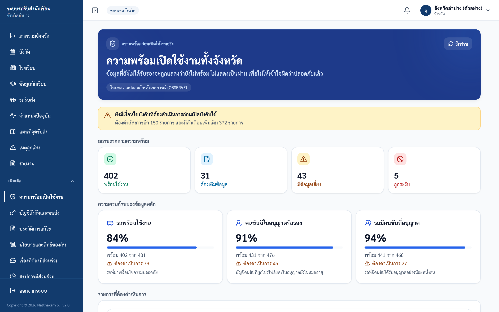
ภาพ: หน้าความพร้อมเปิดใช้งาน
- ข้อมูลที่ยังไม่ได้รับการรับรอง ระบบจะนับว่า "ยังไม่พร้อม" เสมอ เช่น รถที่ยังไม่มีผลตรวจผ่าน
- การเปลี่ยนเป็นโหมด บังคับใช้ (ENFORCE) ต้องให้ผู้ดูแลระบบทำ จังหวัดเปลี่ยนเองไม่ได้ และระบบไม่เปลี่ยนเองตามวันที่
ดูประวัติการแก้ไข
- กด เพิ่มเติม แล้วกด ประวัติการแก้ไข
- เลือกประเภทงาน (เริ่มต้นเป็น ทุกการกระทำ)
- เลือกวันในช่อง ตั้งแต่ และ ถึง
- ถ้าต้องการไฟล์ กด Export CSV
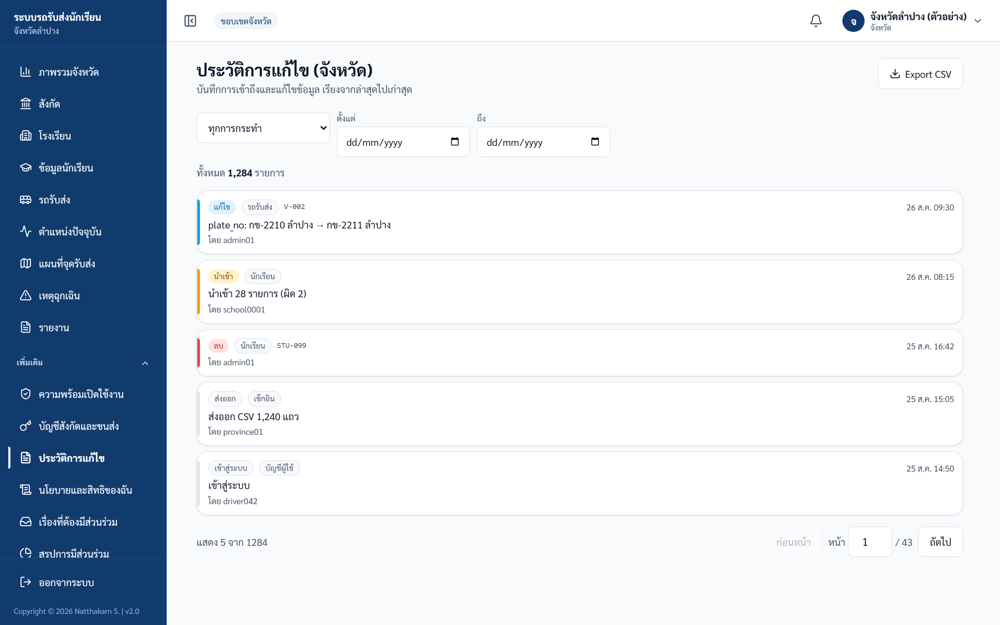
ภาพ: หน้าประวัติการแก้ไข
ทำเสร็จแล้วจะเห็น: ใครทำอะไร เมื่อไร ทั้งระบบ เบอร์โทรและข้อมูลส่วนตัวถูกปิดไว้ ไฟล์ CSV ได้สูงสุด 5,000 รายการล่าสุด ถ้าต้องการมากกว่านั้น ให้เลือกช่วงวันที่ให้สั้นลง
เปลี่ยนรหัสผ่าน และออกจากระบบ
- กดชื่อบัญชีของคุณที่มุมขวาบน
- กด เปลี่ยนรหัสผ่าน
- พิมพ์รหัสผ่านปัจจุบัน แล้วพิมพ์รหัสผ่านใหม่สองครั้ง
- กดปุ่ม เปลี่ยนรหัสผ่าน

ภาพ: เมนูบัญชีมุมขวาบน (หน้าตาเหมือนกันทุกบัญชี)
ทำเสร็จแล้วจะเห็น: เปลี่ยนรหัสผ่านสำเร็จ กรุณาเข้าสู่ระบบใหม่ เครื่องอื่นที่เข้าระบบไว้จะหลุดออกด้วย
- รหัสผ่านใหม่ต้องยาวอย่างน้อย 8 ตัวอักษร ห้ามเหมือนชื่อผู้ใช้ ห้ามเดาง่าย เช่น 12345678
- เลิกใช้งานแล้ว กด ออกจากระบบ (ในเมนูบัญชี หรือด้านล่างเมนูซ้าย)
ปัญหาที่พบบ่อย
| ถ้าเห็น/ถ้าเกิด | ให้ทำแบบนี้ |
|---|---|
| ขึ้น ชื่อผู้ใช้หรือรหัสผ่านไม่ถูกต้อง | ตรวจตัวสะกดแล้วลองใหม่ ถ้ายังไม่ได้ ติดต่อผู้ดูแลระบบ |
| ขึ้น มีการพยายามเข้าสู่ระบบหลายครั้งจากเครือข่ายนี้ | รอประมาณ 15 นาทีแล้วลองใหม่ บัญชีไม่ได้ถูกปิด อย่าเดารหัสต่อ |
| ลืมรหัสผ่าน | ติดต่อผู้ดูแลระบบให้รีเซ็ต |
| ขึ้น ไม่มีข้อมูล ในหน้ารายงาน (รวมแท็บสรุปภาพรวมและเชิงนโยบาย) | ยังไม่มีการบันทึกพอจะสรุป ลองเลือกวันอื่น หรือรอให้คนขับและครูบันทึกก่อน |
| หน้าภาพรวมขึ้น โหลดข้อมูลภาพรวมจังหวัดไม่สำเร็จ | ตรวจอินเทอร์เน็ต แล้วกดรีเฟรช ถ้ายังเป็นอยู่ แจ้งผู้ดูแลระบบ |
| เบอร์โทรหรือชื่อผู้ปกครองเป็น "-" | ตั้งใจปิดไว้เพื่อคุ้มครองข้อมูลส่วนบุคคล ถ้าจำเป็น ให้ติดต่อโรงเรียน |
| รถไม่ขึ้นบนแผนที่ | คนขับยังไม่กด เริ่มส่งตำแหน่ง ให้ประสานโรงเรียนหรือคนขับ |
| จำนวนรถในแต่ละหน้าไม่เท่ากัน | "รถทั้งหมด" นับทุกคัน ส่วน "รถรับส่ง" นับเฉพาะรถที่มีนักเรียน เป็นคนละตัวเลข |
| ขึ้น ขอรายงานถี่เกินไป กรุณารอสักครู่ | รอสักครู่ แล้วค่อยเปิดหรือดาวน์โหลดรายงานใหม่ |
| ความพร้อมขึ้นว่า "ยังไม่พร้อม" ทั้งที่กรอกข้อมูลแล้ว | ข้อมูลยังไม่ได้รับรอง ให้ขนส่งหรือโรงเรียนตรวจและรับรองก่อน |
| แจ้งผลกลับผู้เสนอไม่ได้ | ต้องบันทึก ดำเนินการเสร็จ ก่อน |
ติดต่อใครเมื่อมีปัญหา
| เรื่อง | ติดต่อ |
|---|---|
| ลืมรหัสผ่าน บัญชีมีปัญหา ระบบใช้ไม่ได้ | ผู้ดูแลระบบ |
| ข้อมูลรถหรือผลตรวจสภาพไม่ถูกต้อง | ขนส่ง |
| ข้อมูลนักเรียนหรือบัญชีโรงเรียนไม่ถูกต้อง | โรงเรียน หรือสังกัดของโรงเรียนนั้น |
| เหตุฉุกเฉินที่ต้องติดตาม | โรงเรียนหรือสังกัดของรถคันนั้น |
สิ่งที่ต้องบอกเมื่อแจ้งปัญหา:
- ชื่อผู้ใช้ของคุณ (ห้ามบอกรหัสผ่าน)
- หน้าหรือเมนูที่มีปัญหา เช่น "รายงาน"
- วันและเวลาที่เกิด
- ข้อความที่ขึ้นบนจอ หรือภาพหน้าจอ
ข้อควรระวังเรื่องข้อมูลนักเรียน
- อย่าส่งต่อไฟล์รายงานหรือภาพหน้าจอที่มีชื่อนักเรียนให้คนที่ไม่เกี่ยวข้อง
- ห้ามพิมพ์ชื่อนักเรียน เลขบัตรประชาชน หรือเบอร์โทร ในเรื่องที่ต้องมีส่วนร่วม
- ระบบบันทึกการดาวน์โหลดรายงาน และการเปิดดูตำแหน่งรถและแผนที่จุดรับส่งไว้ทุกครั้ง
- ออกจากระบบทุกครั้งเมื่อใช้เครื่องร่วมกับผู้อื่น
ตรวจความเข้าใจหลังอบรม
- ☐ เข้าสู่ระบบ และอ่านแถบสรุปในหน้าภาพรวมจังหวัดได้
- ☐ เปิดเรื่องที่ต้องมีส่วนร่วม และบันทึก "รับเรื่อง" ได้
- ☐ ดาวน์โหลดรายงานรายวันเป็น Excel ได้
- ☐ รีเซ็ตรหัสผ่านให้บัญชีสังกัดหรือขนส่งได้
- ☐ รู้ว่าลืมรหัสผ่านตัวเองต้องติดต่อใคร
หมายเหตุ: เมนู "การเบี่ยงเส้นทาง" ยังไม่เปิดใช้งาน จึงไม่แสดงในเมนู